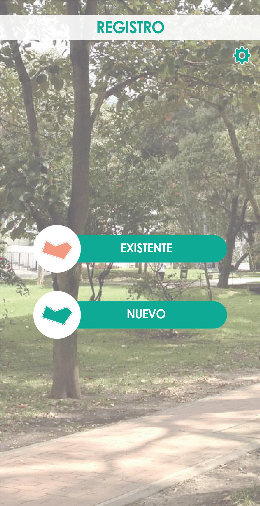

<ion-content class="background-image">

  <ion-card>
  
    <button class="exist"(click)=exist()>EXISTENTE</button>
    <button class="new"(click)=new()>NUEVO</button>
    <button class="atras" (click)=login()>Atras</button>
    
     
  </ion-card>

</ion-content>